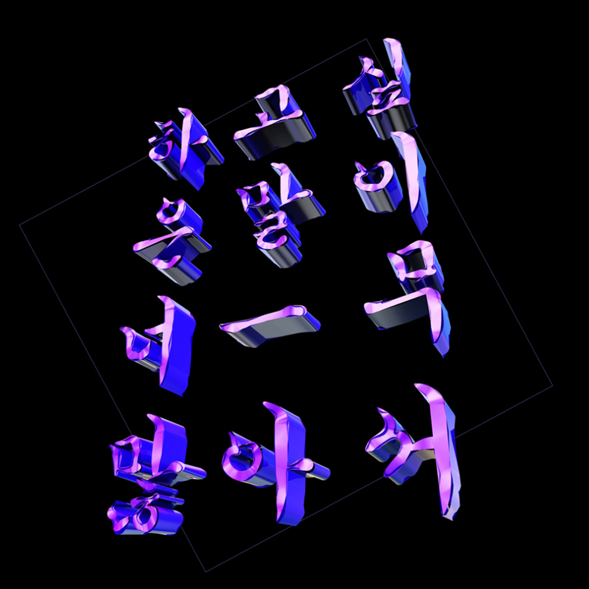

페미니스트 아트 크루, '하고싶은말이너ㅡ무많아서'1
1 개요
|  |
| |
| 여성을 위한 미디어를 만드는 페미니스트 아트 크루, 하말넘많 |
멤버 두 명 모두 영상을 전공했으며 그 덕인지 영상의 퀄리티가 매우 좋은 편. 날로 발전하는 멤버들의 영상편집 기술과 깨알같은 개그로 구독자에게 큰 즐거움을 선사하며, 전국 순회 토크 콘서트, 타 페미니스트 유튜버들과의 콜라보 방송 등 여성주의적 시각에서 넓은 스펙트럼의 콘텐츠를 제작하고 있다.
재미있고 높은 퀄리티의 영상을 제작한다는 원칙 하에 언제나 보는 이가 무언가 얻어갈 수 있는 콘텐츠들을 제작한다. 때로 자신들이 미치는 영향력을 인지하고 있기에 영상을 제작할 때는 물론 일상생활에서도 여성주의적 원칙을 지키기 위해 노력한다고 밝혔으며, 그런 노력이 영상에서도 잘 드러난다. 남성중심적 콘텐츠가 홍수처럼 쏟아지는 시대에 건강하고 유익하게 즐길 수 있는 콘텐츠를 생산해주는 단비 같은 채널이다.
최근 꾸준한 인기를 얻고 있는 디폴트립 시리즈, 품격 있는 그러나 와압-을 하지 않잖아 요리 영상, 필름카메라 리뷰(가이드) 영상, 조지 강회장의 플레이리스트 영상 등 새로운 시도를 하고 있으며 새 콘텐츠 역시 좋은 호응을 얻고 있다.
2 멤버
2.1 서솔
평상시 굉장히 꼼꼼하고, 웬만해선 화를 잘 안 내는 침착한 성격의 소유자라고 한다.
서솔이라는 호칭은 모친의 성씨인 ‘서’에 이름 ‘솔’을 붙여서 만들었다고 한다.
2019년 광복절에 진행한 구독자 9만 기념 달성 라이브 방송에서 '구독자 아니고 동업자라 다행이야' 라고 강민지에 대해 말한 적이 있다. 서윗하게 팩트를 날리는 게 특징.
2.2 민지
하말넘많의 예능 담당이자 별명부자. 미니게임지옥, 뉴토피아, 사합지졸 등 예능 프로그램에서 일당백을 한다. 유명한 밈으로는 왕초의 눈치를 보며 감자 허버허버 짤, 죄송합니다 짤 등이 있다.
노래도 잘 부르고 (목소리 크기가 기준이라면 당신은 1등이야이어폰 주의) 춤도 잘 춘다. 머릿속으로는 거의 항상 노래를 부르고 있다고 한다. 영상 편집 중일 때를 제외하면 입을 한시도 가만 두지 않는다는데... 2
식물을 기르는 것도 좋아해서 반려 고추, 반려 깻잎, 반려 고수 등을 기른 경험이 있다. 하말넘많을 안했다면 고향인 대구에 내려가 농사를 지었을 것이라고 말한 바 있다.
2016 EBS국제다큐영화제에 다큐멘터리 <천에 오십 반지하 (A Homeless Child)>를 출품하였다.
3 콘텐츠
하말넘많 재생목록 가이드
Q. 페미니즘 이야기가 궁금하다면? A. 영상으로 읽는 페미니즘
Q. 여자들이 게임하는 것 보고싶다? A. 미니게임지옥, 사합지졸
Q. 답답해 죽겠어 여행 가고 싶어 A. 디폴트립
Q. 여성서사, 영화를 여성의 시각으로 보고 싶어 A. 보스들의 수다방
Q. 돈 모으는 여자들, 어떻게 모으는 거야? A. 당신의 가계부, 비혼여성 경제백서
Q. 지방에서 페미니즘 활동 어떻게 하는 거야? A. 전국비혼지도
Q. 디폴트 여자들이 하는 먹방 보고 싶어 A. 하말넘많 브이로그
Q. 토크 콘서트, 강연 영상 보고 싶어 A. 하말넘많 브이로그
Q. 남성 취미로 인식되는 캠핑, 여자들도 할 수 있어 A. 텐트하우스
3.1 영상으로 읽는 페미니즘
하말넘많이 일컫는 ‘본 콘텐츠’이자 채널의 뿌리.
영상으로 읽는 페미니즘 재생목록
- ENG) [하말넘많] 바바리맨은 '성범죄자' 입니다!
- JP SUB) 결혼 말고 비혼 | 제 인생입니다. 발언권 누가 줬지요? [하말넘많]
- [하말넘많] 경조사특집2탄 | 장례식장에서 불편한 순간들
- [하말넘많] 추석 특집 한풀이 | 명절마다 되풀이되는 불편한 순간들
- [하말넘많] #스쿨미투 (#교내성폭력고발), 우리들의 이야기 1편
- [하말넘많] #스쿨미투 (#교내성폭력고발), 우리들의 이야기 2편
- ENG) 숏컷=탈코야? | 주체적 꾸밈의 허상과 내적탈코 [하말넘많]
- 예술계여성혐오모음.zip | 여성혐오없이 글 못쓰나요? [하말넘많]
- ENG) 유아 립스틱 매출 전년 대비 549% 증가(feat.불꽃분노) | 여성혐오로 뒤덮인 유아산업 [하말넘많]
- ENG) '주체적 섹시'가 말이 안되는 이유 | 오늘 본 여돌의 코르셋이 내일 어린이에게 내려간다 [하말넘많]
- ENG) 한자에 만연한 여성 혐오적 의미들 | 워딩의 중요성 [하말넘많]
- ENG) 뒤샹의 '샘'은 사실 여성 작가의 것이다? | 사라지는 여성 예술가들 [하말넘많]
- 문제작이 아니라 문제, 그때도 틀리고 지금도 틀리다 (스포有) [하말넘많]
- 인생샷과 마카롱의 상관관계 ㅣ 가성비와 핑크택스(여성세) [하말넘많]
- ENG/JP) 여성의 인생을 망치는 거식증과 다이어트 | 우리 제발 건강하게 살아요 [하말넘많]
- [여성복의 진실 EP.01] '여성복' 사이즈에 대한 충격적인 이야기들 | 전국의 여성분들 필수 시청♨ | 하말넘많 X FUSE SEOUL
- [여성복의 진실 EP.02] 여성복에 주머니가 없는 이유는 무엇일까요? | 하말넘많 X FUSE SEOUL
- [여성복의 진실 EP.03] 여성복 쇼핑, 자꾸 실패하는 이유? 우리도 이제 사람다운 옷 입어요! / 하말넘많 X FUSE SEOUL
- 레깅스를 산 내 돈은 어디로 갔을까? 내가 믿었던 것들의 배신, 책 '페미니즘을 팝니다' 리뷰 | 하말넘많
- 화려한 미디어의 뒤편에서 우리가 확인해보면 좋을 것들 [하말넘많]
- 결혼 안해도 아파트 살 수 있을까요? '여성의 집'에 대한 이야기, 김진아 대표님과 함께 합니다 [하말넘많]
- "여자를 뭐하러 뽑아? 결혼하면 애 낳고 그만둘 건데." ☜ 진심이세요? | 여성의 채용차별, 경력단절 그리고 맞벌이 비율 (feat. 신혼부부 통계) [하말넘많]
- '남녀 임금 격차'의 가장 큰 이유는 'OO'이라는데... ☜ 어떤 음모나, 조작에 의해 이렇게 되는 게 아니에요 [하말넘많]
- 아직도 '백마탄 왕자님' 찾고 계세요? [하말넘많]
- 내가 크리스마스에 연애 안하는 게 너랑 무슨 상관이야?
- 엘사와 자스민이 우리에게 남긴 것 (feat.디즈니 공주)
- '엄마'가, '현모양처'가 꿈이었던 내 친구들
- 주옥같은 답변들이 쏟아집니다
- '맏딸은 살림 밑천' 옛말이라고요?
- 학자금 대출 받은 나, 내가 번 돈으로 대학 가는 남동생
- 리더십 있는 여성이 듣는 오해와 편견
- 그 시절, 우리가 했던 돈 아까운 소비 BEST 9
3.2 미니게임지옥 & 사합지졸
편안하게 시청할 수 있는 디폴트 여성들의 오락 콘텐츠. 2020년 5월 현재 시즌1 미니게임지옥, 시즌2 사합지졸까지 업로드되어 있다.
2019년 3월부터 11월까지 업로드된 대장정 시리즈. 2020년 디폴트립 시즌2가 계획 중에 있었으나 상황적 여건으로 인하여 가능 여부는 미상.
디폴트립 재생목록
3.4 보-스들의 수다방
여성서사 작품을 여성들의 시각으로 읽어내는 콘텐츠.
보스들의 수다방 재생목록
3.5 비혼 여성 경제백서
경제와 재테크, ‘돈’에 대해 여성들이 쉽게 다가갈 수 있도록 돕기 위한 콘텐츠.
비혼 여성 경제백서 재생목록
3.6 당신의 가계부
경제 전문가와 함께 경제에 대한 다양한 주제를 이야기한다. 연말정산 영상으로 화제가 되었다.
당신의 가계부 재생목록
3.7 전국비혼지도
전국의 페미니스트들과 만나 각 지역의 페미니스트를 가시화하는 영상. 지역에서 페미니즘 활동을 하는 여성들에게 번아웃이 찾아올 때 도움이 되고자 제작한 콘텐츠이기도 하다.
전국비혼지도 재생목록
3.8 하말넘많 브이로그
하말넘많의 일상을 보여주는 콘텐츠. 많은 인기를 끌었던 냉장고 파먹기 시리즈도 이 재생목록에 있다.
하말넘많 브이로그 재생목록
- [학교라는 이름 아래 가해자 천국] 11/03 교육계 재립 프로젝트 : 교내 성폭력 고발
- “강릉가서 일출 볼래?” 밤12시, 차 있는 친구에게 전화가 왔다 [하말넘많]
상 타러 '제주도 당일치기'한 유튜버가 있다?!
- 드디어 제주도 갔다 옴! 제주도 토크콘서트 당일, 하말넘많의 하루 따라가보기 VLOG (feat.흑돼지)
- ENG) 비디오 아티스트의 한 달 일상 브이로그 [하말넘많]
- 3일 전 도착한 실버버튼 개봉기 (골드 버튼까지 -90만 명♨)
- Heavytalker Talk Concert Teaser | 4만명 기념 하말넘많 토크콘서트 영상 포스터
- [제주 디폴트립] 10분 안에 제주도 간접 여행 하기 ☞ 우도 자전거 일주 + 문어 해물라면 영접 | 청량한 우도 드론샷 모음 | 하말넘많
- JP SUB) 59초로 보는 여성소비총파업 [하말넘많]
- ENG) 36만명의 불편한용기는 이제 시작입니다 | 제 6차 편파판결, 불법촬영 규탄시위
- 전동 드라이버를 한 손으로 갖고 노는 강민지 기사 [밀착 취재]
- 워킹 홀리데이 in 서울편 | 수원 토크콘서트 후 일하고, 촬영하고, 수영하고, 라이브 하기 [하말넘많]
- 넥타이 매는 법 알려드림 ★축★ 하말넘많 관공서 진출
- ?불의 도시 대구 토크콘서트 밀착 취재 + 하말넘많 토콘 신청 방법 자세히 알려드립니다!
- 머리가 핑 도는 하말넘많의 하루
- [제주 디폴트립] 우리에게 주어진 시간 단 하루! 하말넘많 제주도 일일투어 모십니다 (with.종달리 수국/전복구이/섭지코지) | 제주도 여행 브이로그#1
- 비혼 여성들이 크리스마스에 모였다! 토크콘서트 현장스케치 l 전지적 참가자 시점 [하말넘많]
- 하말넘많은 친한 척 하는 것이다???
작업실에서 먹는 스테이크의 맛
- ENG) 치앙마이 여행 브이로그 (feat.탈코) / Chiang Mai Vlog [하말넘많]
- 내일 10억이 생긴다면?? | 추억의 백문 백답
먹방) 치킨, 간장 떡볶이, 짜장라면, 파스타, 하울정식
- 요리교실로 시작해 신년 기자회견으로 끝난 캠핑 브이로그 [하말넘많]
- 유튜브 본사에서 날아온 초대장
[하말넘많 추측하기] 우리를 대체 뭐라고 생각하는 거야...?
- 일주일 동안 먹은 것들 "어디까지 먹어 치워 봤니?" [하말넘많]
- ENG) 여성소비총파업 l 집에서 존버하는 브이로그 Korea Women’s General Consumption Strike
- ?하말넘많 숙대 강연 다녀왔습니다. 드디어 대학교 입성! ※엄청난 함성 소리 주의※
- 가을 맞이 동묘 쇼핑 하울 #같이_쇼핑해요 [하말넘많]
- 내 귀를 의심하게 되는 탈코 계기
3.9 텐트하우스
하말넘많의 캠핑 콘텐츠. 텐트하우스 재생목록은 존재 자체로 남성의 전유물로 취급되던 ‘캠핑’에 대한 전복이기도 하다.
텐트하우스 재생목록
3.10 하말넘많 ASMR
하말넘많의 ASMR 콘텐츠. 성적 대상화되지 않은 여성들이 나오는 편안한(?) 영상들이다.
하말넘많 ASMR 재생목록
3.11 대학생 타이쿤
‘대학생 때 알았다면 좋았을 것들’을 시작으로 본격화된 콘텐츠. 대학생 맞춤 경제 이야기를 하기 위해 제작된 콘텐츠이기도 하다.
대학생 타이쿤 재생목록
3.12 운동 동영상
홈트가 유행인 지금 당신에게 강력 추천하는 운동 동영상.
운동 동영상 재생목록
3.13 하말넘많 멤버십 영상
당연한 소리이지만 하말넘많 멤버십에 가입한 사람들만 다음 영상을 볼 수 있다.
하말넘많 멤버십 영상 재생목록
- 멤버십의 문을 열며...
- 실버버튼 언박싱
- Q&A에서 다 하지 못한 이야기들
- 의식의 흐름으로 흘러가는 새해 인사
- 서울여대 강연 비하인드
- 보다가 잠드셔도 좋습니다... [노동 현장]
- 무려 작년 여름;;
- 전등 가는 강민지가 10분 동안 전등만 가는 영상 [선공개]
- 인종차별 당하다 욕쟁이가 되어 버린 사연(욕 주의)
- [맛보기 영상] '하말넘많 추측하기' ^^
- 3일 동안 구글 캠퍼스에서 일어난 일 (feat.VR)
- 멍 때리며 바질페스토 파스타 먹는 하말넘많 in 포르투
- 이것도 작년.. 인가요?ㅎ
- 파리 선글라스 쇼핑 풀버전^^
- 오늘도 시간여행~!
- 가을 하늘 공활한데..
- 12분 동안 정리만 하는 캠핑 ASMR
- 캠핑장 모닝 루틴
- 네글자 퀴즈 무편집본
- '그' 탈코미용실 | 오랜만입니다
- 스위스 마트 물가는 어떨까?
- 허술한 알까기^_^
- 휴일을 맞아 오늘은 카페입니다?
- 파스타=ㅎㅁㄴㅁ사료
3.14 라이브 하이라이트 클립
라이브 하이라이트 클립 재생목록
삭제 혹은 비공개 처리된 동영상
5월경 신설된 하말넘많 멤버십(♠)에게 삭제·비공개 처리된 영상의 일부를 편집하여 업로드한다고 한다. 해당 멤버십의 콘텐츠는 정기적인 업로드 일정은 고정되어 있지 않다.
- 혜화 시위에서 광화문 시위로! | 불법촬영 편파수사 규탄시위 후기와 백래시
- 아가씨가 아니라 손님입니다 | 택시에 타면 생기는 일
- 대학시절 들었던 후려치기와 가스라이팅 | 그 때 페미니즘을 알았더라면
- 탈코미용실 | 탈코르셋, 탈가부장제
- 악플 먹방 ASMR: 웃음보장, 감동보장 댓글 대잔치
- 여성이 집을 구할 때 겪는 빡침 (feat. 천에오십반지하 다큐)
- 하말넘많의 첫번째 라이브 스트리밍
- 그땐 그랬지 | 그 시절 우리가 목숨걸던 컨셉
- ENG) Moments of Feminist video artist from Korea [Heavytalker]
- 하말넘많의 두번째 라이브 스트리밍
4 외부 링크
5 유행어
6 논란 및 사건
페미니스트 유튜버로 살아간다는 것
2020년 5월 31일3 하말넘많의 멤버 서솔이 '페미니스트 유튜버로 살아간다는 것' 이라는 포스팅을 공개하였다. 페미니스트 유튜버들은 성별을 불문한 안티 페미니스트들의 공격에 불필요하게, 또한 쉽게 노출되어 있다. 해당 포스트는 페미니스트 유튜버의 입장에서 불공정한 현실을 담담하게 기술하였다.
하말넘많 스마트폰: 보이지 않는 여자들 리뷰 영상편
2020년 7월, 하말넘많은 방송에서 도서 보이지 않는 여자들을 리뷰하면서 스마트폰의 사이즈 경쟁이 평균적으로 손 크기가 작은 여성에게 불편함을 초래할 수 있다는 부분을 인용하였다. 안티페미니스트 유튜버 뻑가가 이 방송을 저격하며 안티페미니스트들의 악플 공격이 이어졌다.
젠더 데이터 공백은 우리 삶 곳곳에 스며 있다. 매일 들고 다니는 스마트폰 평균 크기는 5.5인치(13.97㎝). 남자들 평균 손 크기 7.6인치(19.3㎝)에 맞춰진 것이다. 손 평균 크기가 6.8인치(17.2㎝)인 여자들은 겨우 쥘 수 있다. 평소 스마트폰을 자주 떨어뜨렸다면 여자인 당신 잘못이 아니다.4
하말넘많은 채널의 댓글 기능을 중단하고, 나아가 채널 자체가 일시적으로 비공개 처리되기에 이르렀다.
채널을 찾아주시는 모든 분들. 하말넘많은 '남녀 갈등' '성별 갈등'을 조장하는 채널이 아닙니다. 저희가 정말 성별 갈등을 조장하여 얻는 것이 있을까요. 하말넘많 채널의 목표는 늘 말씀드렸던 것처럼 '소멸'입니다. 더 이상 할 말이 없는 세상의 도래를 기다리기 때문입니다. 저희가 꿈꾸는 세상은 여러분들과 마찬가지로 살기 좋은 세상입니다. 이 점 오해하지 않으셨으면 좋겠습니다. 끝으로, 채널을 향한 도 넘은 악플이 3일째 이어지고 있습니다. 때문에 채널의 댓글 기능을 잠시동안 제한하도록 하겠습니다. 이 점 양해 부탁드리겠습니다. 감사합니다.
트위터에서는 #하말넘많_연대합니다 해시태그 운동을 통해 하말넘많을 지지하고 뻑가의 해당 방송 및 채널을 신고하자는 독려가 이어졌다.
7 여담
- 어느 날, 멤버 서솔이 새벽에 갑자기 인스타 툰을 그리고 싶어서 민지에게 새벽에 카톡 메세지를 보냈고, 평소 귀가 굉장히 얇아서 남의 말을 잘 새겨듣는 버릇이 있는 멤버 민지는 때마침 직접 디자인한 그래픽으로 티셔츠 한장 만들어서 한 계절 잘 보내고 싶었을 뿐인데, 정신차려보니 페미니스트 아트 크루 [하말넘많]의 멤버가 됐다고 한다.
- 채널 1주년 기념 라이브 방송에서 악플에 관련하여 서로 아침에 일어나면 악플부터 지운다고 밝혔다. 구독자들이 굳이 자신들의 채널에서까지 스트레스를 받지 않길 바라기도 하고, 서로 상대방이 악플을 보고 상처 받지 않길 바라는 마음에서 열심히 댓글을 관리하고 있다고.
- 대체로 시청자들을 ‘선생님들’이라고 호명한다. 구독자 애칭에 대한 건의가 이어지자 ‘(남유튜버 채널을 많이 보지 않아 확실히는 모르겠지만) 남유튜버들도 모두 애칭을 만들게 된다면, 그때 할게요’라고 언급하였다.
- 할말넘많, 하만넘많 아님.
- 2020년 6월6일 서울신문에서 인터뷰가 올라왔다.